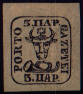
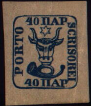
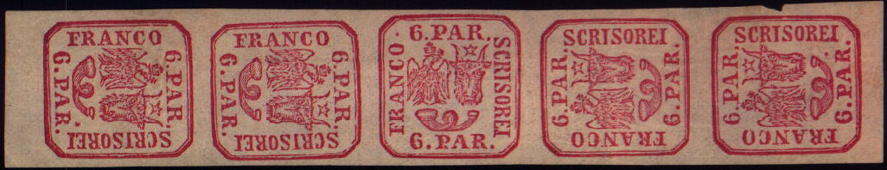
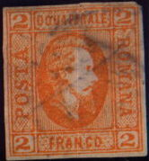
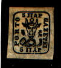
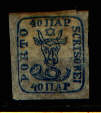
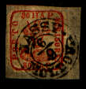
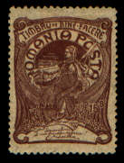

ROMANIAN STAMP GALLERY
Valentin Robu, Romania
(Early period 1858 - 1866)
1858 Bull Heads of Moldavia (second issue). Stamps were inscribed in both Latin and Chirilic alphabet



1862 Romania - Arms of the United Principalities of Moldavia and Wallachia



1864 Prince Alexandru Ioan Cuza


ROMANIAN STAMP GALLERY
Valentin Robu, Romania
Pictures of older Romanian stamps






Newspaper stamps:

We present these two pages especially for historical reasons. Published over 10 years ago, these were ones of the first Romanian philatelic pages, if not the first ones. They were created and published when the Internet access was introduced in Cluj - Napoca. (Victor Manta, PWO, 2008. Based on a personal communication with the author of the pages).